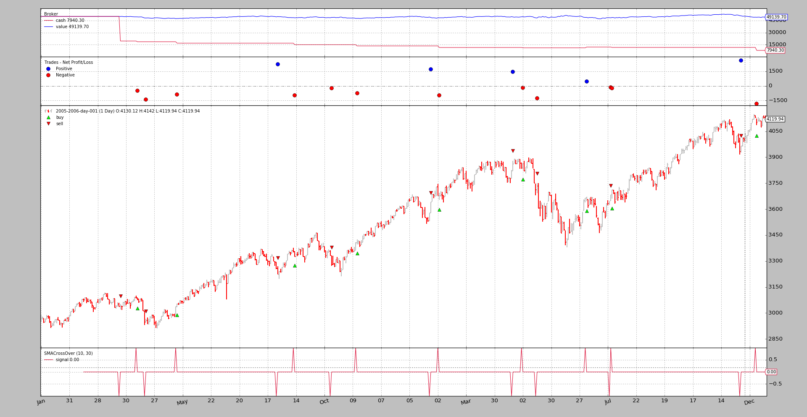

Credit Interest¶
In some situations, the cash amount in real brokers may be decreased because the operation on assets includes an interest rate. Examples:
- Short selling of stocks
- ETFs both long and short
This means that not only the trades make up the profitability of a system, because the interests on the credit take a bite on the account.
To cover this cases backtrader includes (starting with release 1.8.8.96)
functionality to take this into account.
Extending CommissionInfo¶
Even if not associated to any order/trade, the discount of cash from the account can be modeled as a commission being charged by the broker. As such and given that backtrader already offers a flexible and extensible commission system, this system has been slightly extended to support credit interest.
A CommissionInfo can now be instantiated with two new parameters:
interest(def:0.0)If this is non-zero, this is the yearly interest charged for holding a short selling position. This is mostly meant for stock short-selling
The formula:
days * price * abs(size) * (interest / 365)It must be specified in absolute terms: 0.05 -> 5%
Note
the behavior can be changed by overriding the method:
_get_credit_interest
interest_long(def:False)Some products like ETFs get charged on interest for short and long positions. If ths is
Trueandinterestis non-zero the interest will be charged on both directions
The parameters can also be set via the broker using the following method:
def setcommission(self,
commission=0.0, margin=None, mult=1.0,
commtype=None, percabs=True, stocklike=False,
interest=0.0, interest_long=False,
name=None)
Where interest and interest_long obviously bear the same meaning as
above.
Applying a CommissionInfo¶
For a stock with a commission in percentage a typical use scenario with credit interest would be as follows
import backtrader as bt
cerebro = bt.Cerebro()
comminfo = bt.CommissionInfo(commtype=bt.CommissionInfo.COMM_PERC, # % commission
commission=0.005, # 0.5%
percabs=True, # perc expressed in abs terms
stocklike=True,
interest=0.05, # 5% anual credit interest rate
)
cerebro.broker.addcommissioninfo(comminfo)
...
This is mostly useful if th end user has own commission schemes.
A simpler case with setcommission:
import backtrader as bt
cerebro = bt.Cerebro()
cerebro.broker.setcommission(commtype=bt.CommissionInfo.COMM_PERC, # % commission
commission=0.005, # 0.5%
percabs=True, # perc expressed in abs terms
stocklike=True,
interest=0.05, # 5% anual credit interest rate
)
...
And the rest as in any other usual backtrader script.
Some sample scenarios¶
Long only, no exit, No interest¶
To establish a minimum baseline, let’s start without interest and letting the script enter the market only long and avoid exiting.
$ ./credit-interest.py --plot --stocklike --long --no-exit
01 2005-04-11 23:59:59 BUY Size: +10 / Price: 3088.47
The idea should be clear now. Have a flat cash line away from the total portfolio value and showing no deduction.
Long only, no exit and interest¶
Let’s try to add interest and see what happens (we’ll be adding a huge 15%
interest to try to notice the movements)
$ ./credit-interest.py --plot --stocklike --long --no-exit --interest 0.15
01 2005-04-11 23:59:59 BUY Size: +10 / Price: 3088.47
NOTHING HAS CHANGED! And this is expected. In most cases the interest is
applied only to short positions (taken with a credit) and this is a a
long-only position.
Let’s tell the script to do it for long positions too
$ ./credit-interest.py --plot --stocklike --long --no-exit --interest 0.15 --interest_long
01 2005-04-11 23:59:59 BUY Size: +10 / Price: 3088.47
And the change is there. There has been a decrement and is huge (given the huge interest which is being taken)
A long-short scenario¶
This would model something like an ETF which has a yearly interest and can
be a regular one or an inverse one. First let’s establish the baseline.
$ ./credit-interest.py --plot --stocklike
01 2005-03-22 23:59:59 SELL Size: -10 / Price: 3040.55
02 2005-04-11 23:59:59 BUY Size: +10 / Price: 3088.47
...
...
34 2006-12-19 23:59:59 BUY Size: +10 / Price: 4121.01
35 2006-12-19 23:59:59 BUY Size: +10 / Price: 4121.01
Plenty more operations and the system is always in the market.
Because the ETF will have interest charged on both long and short
operations, the interest will be added for both now:
$ ./credit-interest.py --plot --stocklike --interest 0.15 --interest_long
01 2005-03-22 23:59:59 SELL Size: -10 / Price: 3040.55
02 2005-04-11 23:59:59 BUY Size: +10 / Price: 3088.47
...
...
34 2006-12-19 23:59:59 BUY Size: +10 / Price: 4121.01
ACHTUNG: 34 operations instead of 35. It seems something might be
broken but ... NO ...
The charged interest is taking a bit into the cash reserves and this ends up not allowing the last order because THERE IS NOT ENOUGH CASH
Removing the interest charge from long operations (even if not real for an ETF) will allow the system to come to the end:
$ ./credit-interest.py --plot --stocklike --interest 0.15
01 2005-03-22 23:59:59 SELL Size: -10 / Price: 3040.55
02 2005-04-11 23:59:59 BUY Size: +10 / Price: 3088.47
...
...
34 2006-12-19 23:59:59 BUY Size: +10 / Price: 4121.01
35 2006-12-19 23:59:59 BUY Size: +10 / Price: 4121.01
Back in business until the 35th operation.
A quick comparison with the original shows that the final cash has changed from
7490 (with no interest) to 5418 (applying interest only to short
operations)
Conclusion¶
This new functionality allows to simulate with even more fidelity backtesting scenarios to try to achieve the dream: a profitable system
Sample usage¶
$ ./credit-interest.py --help
usage: credit-interest.py [-h] [--data DATA] [--fromdate FROMDATE]
[--todate TODATE] [--cash CASH] [--period1 PERIOD1]
[--period2 PERIOD2] [--interest INTEREST]
[--interest_long] [--long | --short] [--no-exit]
[--stocklike] [--margin MARGIN] [--mult MULT]
[--stake STAKE] [--plot [kwargs]]
Sample for Slippage
optional arguments:
-h, --help show this help message and exit
--data DATA Specific data to be read in (default:
../../datas/2005-2006-day-001.txt)
--fromdate FROMDATE Starting date in YYYY-MM-DD format (default: None)
--todate TODATE Ending date in YYYY-MM-DD format (default: None)
--cash CASH Cash to start with (default: 50000)
--period1 PERIOD1 Fast moving average period (default: 10)
--period2 PERIOD2 Slow moving average period (default: 30)
--interest INTEREST Activate credit interest rate (default: 0.0)
--interest_long Credit interest rate for long positions (default:
False)
--long Do a long only strategy (default: False)
--short Do a long only strategy (default: False)
--no-exit The 1st taken position will not be exited (default:
False)
--stocklike Consider the asset to be stocklike (default: False)
--margin MARGIN Margin for future like instruments (default: 0.0)
--mult MULT Multiplier for future like instruments (default: 1.0)
--stake STAKE Stake to apply (default: 10)
--plot [kwargs], -p [kwargs]
Plot the read data applying any kwargs passed For
example: --plot style="candle" (to plot candles)
(default: None)
Sample code¶
from __future__ import (absolute_import, division, print_function,
unicode_literals)
import argparse
import collections
import datetime
import itertools
import backtrader as bt
class SMACrossOver(bt.Signal):
params = (('p1', 10), ('p2', 30),)
def __init__(self):
sma1 = bt.indicators.SMA(period=self.p.p1)
sma2 = bt.indicators.SMA(period=self.p.p2)
self.lines.signal = bt.indicators.CrossOver(sma1, sma2)
class NoExit(bt.Signal):
def next(self):
self.lines.signal[0] = 0.0
class St(bt.SignalStrategy):
opcounter = itertools.count(1)
def notify_order(self, order):
if order.status == bt.Order.Completed:
t = ''
t += '{:02d}'.format(next(self.opcounter))
t += ' {}'.format(order.data.datetime.datetime())
t += ' BUY ' * order.isbuy() or ' SELL'
t += ' Size: {:+d} / Price: {:.2f}'
print(t.format(order.executed.size, order.executed.price))
def runstrat(args=None):
args = parse_args(args)
cerebro = bt.Cerebro()
cerebro.broker.set_cash(args.cash)
dkwargs = dict()
if args.fromdate is not None:
fromdate = datetime.datetime.strptime(args.fromdate, '%Y-%m-%d')
dkwargs['fromdate'] = fromdate
if args.todate is not None:
todate = datetime.datetime.strptime(args.todate, '%Y-%m-%d')
dkwargs['todate'] = todate
# if dataset is None, args.data has been given
data = bt.feeds.BacktraderCSVData(dataname=args.data, **dkwargs)
cerebro.adddata(data)
cerebro.signal_strategy(St)
cerebro.addsizer(bt.sizers.FixedSize, stake=args.stake)
sigtype = bt.signal.SIGNAL_LONGSHORT
if args.long:
sigtype = bt.signal.SIGNAL_LONG
elif args.short:
sigtype = bt.signal.SIGNAL_SHORT
cerebro.add_signal(sigtype,
SMACrossOver, p1=args.period1, p2=args.period2)
if args.no_exit:
if args.long:
cerebro.add_signal(bt.signal.SIGNAL_LONGEXIT, NoExit)
elif args.short:
cerebro.add_signal(bt.signal.SIGNAL_SHORTEXIT, NoExit)
comminfo = bt.CommissionInfo(
mult=args.mult,
margin=args.margin,
stocklike=args.stocklike,
interest=args.interest,
interest_long=args.interest_long)
if True:
cerebro.broker.addcommissioninfo(comminfo)
cerebro.run()
if args.plot:
pkwargs = dict(style='bar')
if args.plot is not True: # evals to True but is not True
npkwargs = eval('dict(' + args.plot + ')') # args were passed
pkwargs.update(npkwargs)
cerebro.plot(**pkwargs)
def parse_args(pargs=None):
parser = argparse.ArgumentParser(
formatter_class=argparse.ArgumentDefaultsHelpFormatter,
description='Sample for Slippage')
parser.add_argument('--data', required=False,
default='../../datas/2005-2006-day-001.txt',
help='Specific data to be read in')
parser.add_argument('--fromdate', required=False, default=None,
help='Starting date in YYYY-MM-DD format')
parser.add_argument('--todate', required=False, default=None,
help='Ending date in YYYY-MM-DD format')
parser.add_argument('--cash', required=False, action='store',
type=float, default=50000,
help=('Cash to start with'))
parser.add_argument('--period1', required=False, action='store',
type=int, default=10,
help=('Fast moving average period'))
parser.add_argument('--period2', required=False, action='store',
type=int, default=30,
help=('Slow moving average period'))
parser.add_argument('--interest', required=False, action='store',
default=0.0, type=float,
help=('Activate credit interest rate'))
parser.add_argument('--interest_long', required=False, action='store_true',
help=('Credit interest rate for long positions'))
pgroup = parser.add_mutually_exclusive_group()
pgroup.add_argument('--long', required=False, action='store_true',
help=('Do a long only strategy'))
pgroup.add_argument('--short', required=False, action='store_true',
help=('Do a long only strategy'))
parser.add_argument('--no-exit', required=False, action='store_true',
help=('The 1st taken position will not be exited'))
parser.add_argument('--stocklike', required=False, action='store_true',
help=('Consider the asset to be stocklike'))
parser.add_argument('--margin', required=False, action='store',
default=0.0, type=float,
help=('Margin for future like instruments'))
parser.add_argument('--mult', required=False, action='store',
default=1.0, type=float,
help=('Multiplier for future like instruments'))
parser.add_argument('--stake', required=False, action='store',
default=10, type=int,
help=('Stake to apply'))
# Plot options
parser.add_argument('--plot', '-p', nargs='?', required=False,
metavar='kwargs', const=True,
help=('Plot the read data applying any kwargs passed\n'
'\n'
'For example:\n'
'\n'
' --plot style="candle" (to plot candles)\n'))
if pargs is not None:
return parser.parse_args(pargs)
return parser.parse_args()
if __name__ == '__main__':
runstrat()


{kind=link}
{kind=link}
{kind=link}
{kind=link}
{kind=link}
{kind=link}